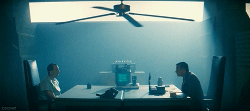

I think the general consensus among normal folk like myself is that those in power are mostly out of touch Eaton type boys with a good heart but out of touch with "Joe public". The wikileaks reports simply highlights some of the decisions these power wielding employees of states were maybe taken after 1 or 2 too many espressos.
I'm not saying we don't need diplomats or people with specific responsibilities, far from it. I just think the leaks highlight that so much power given to a few in an internet connected society is actually counter productive. 20 years ago this wouldn't of been the case -- Diplomacy needs to evolve.
As for our monarchy making stupid comments. Monarchy = Individuals with too much power. I don't take our monarchy seriously so please any foreign readers do the same. The monarchy doesn't affect my daily life in anyway, shape or form and that is how I like it :)
I consider myself a global citizen before any other type of citizenship -- Problem solved.
We had substandard equipment and a lack of support going into Afghanistan yet the American commanders were surprised when we gave a 1/2 arsed effort. Ask any normal American citizen if they feel this was a surprise and I can guarantee their answer will be no.
Our military isn't the pride of our nation, we are grateful for all they have done and continue to do but I do not believe we are a global military force nor do I want my country to be.
The governments have a perfect opportunity now to come out and be more open with sensitive information, we can take it, we live in an information age.. The clue is in the name!
I support wikileaks and all the founding orgs and Julian in publishing the papers. I think they are needed to take our society from a draconian information age into a truly fair society. After all that is what we taught at school. Wikileaks just makes it a reality, unfortunately the reality has a few short term painful implications.
So that's my thoughts, nothing controversial. Nothing work related but hopefully if someone in the pub blurts "Wikileaks just want world war" or "Omzg America will get nuked by XXX" remind them this goes on every day behind closed doors and in theory it should lead to a more open, fairer future.
Post at Guardian - How the hell are Guardian so awesome?